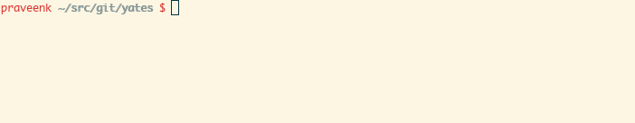
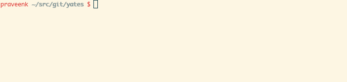

Tutorial
Getting Started
This section will show the basic usage of YATES using some TE algorithms, topologies and example demand traffic matrices already included with YATES.
Inputs
At the minimum, YATES needs the following inputs:
- Topology: A topology is represented as a graph and expressed using the DOT file format in YATES.
For illustration, we will use Abilene's backbone network topology. Our example topology is represented in DOT format as
data/topologies/abilene.dot. - Demands: These are represented as a list (timeseries) of traffic matrices (TMs). Each TM represents the bandwidth requirement from a source to a destination
at a given time. YATES expects TMs as a single file (example:
data/demands/actual/abilene.txt), with each line corresponding to one TM. Each line represents the rows of the TM concatenated together. To identify which entry in the TM corresponds to a particular source and destination node pair, we also need to provide a mapping from rows/columns in the TM to the corresponding end-points in the topology (example:data/hosts/abilene.hosts. The line number of each node in this file is its index in the rows/columns of a TM). YATES supports specifying two timeseries for demands: one representing the operator's predicted demands, while the other representing the actual value of demands that occur in practice.
Basic Usage
The following command shows how to run the YATES simulator for the above mentioned inputs and evaluates the performance of Equal-Cost Multi-Path (ECMP) based TE:
# yates <topology> <actual-demands> <predicted-demands> <host-mapping> \ # [parameters for evaluation such as TE algorithms, budget etc.] yates data/topologies/abilene.dot \ data/demands/actual/abilene.txt data/demands/predicted/abilene.txt \ data/hosts/abilene.hosts -ecmp

The simulator will iterate over all the TMs in the specified demands file and generate
a summary of the performance statistics in data/results/<topology>, which is
data/results/abilene in this case. For
instance, data/results/abilene/MaxCongestionVsIterations.dat will list the
maximum link congestion for each TM when using ECMP.
Comparing TE systems
To compare multiple TE algorithms in the same run, they can be specified together as command line flags. For example, to compare ECMP, k-shortest paths (KSP) and multi-commodity flow based TE (MCF) using the same topologies and demands, we can run the following:
# yates <topology> <actual-demands> <predicted-demands> <host-mapping> \ # [parameters for evaluation such as TE algorithms, budget etc.] yates data/topologies/abilene.dot \ data/demands/actual/abilene.txt data/demands/predicted/abilene.txt \ data/hosts/abilene.hosts -ecmp -ksp -mcf
-mcf flag:
# yates <topology> <actual-demands> <predicted-demands> <host-mapping> \ # [parameters for evaluation such as TE algorithms, budget etc.] yates data/topologies/abilene.dot \ data/demands/actual/abilene.txt data/demands/predicted/abilene.txt \ data/hosts/abilene.hosts -ecmp -ksp
YATES will iterate over the sequence of TE algorithms and generate performance statistics with each TE algorithm in the same output directory as earlier.

Operational Constraints
YATES allows users to specify various operational constraints while evaluating the performance of TE algorithms. For example, one can constrain TE algorithms to use up to a specified maximum number of paths between every source-destination pair. The following command sets this path budget to 4:
yates [... CLI arguments ...] -budget 4
yates data/topologies/abilene.dot \ data/demands/actual/abilene.txt data/demands/predicted/abilene.txt \ data/hosts/abilene.hosts -ecmp -ksp -mcf -budget 4
Comparing Robustness
YATES can be used to simulate failures in the network and measure the robustness to TE systems to the failures. It allows specifying different (optional) mechanisms in which TE systems can react to failures, and records various performance statistics. Let's consider the same topology (abilene) again, and let's say we are interested in the case when each link is equally likely to fail. We can conduct an experiment in which we fail a unique link in the topology in each iteration, and measure the performance as follows:
yates data/topologies/abilene.dot \ data/demands/actual/abilene.txt data/demands/predicted/abilene.txt \ data/hosts/abilene.hosts -spf -ecmp -ksp -budget 4 -fail-num 1 -robust
This compared three TE systems: shortest path first (SPF), ECMP and k-shortest path (KSP) without allowing the systems to reach to failures.
As a result, some fraction of traffic was dropped. This can be seen in data/results/abilene/TotalThroughputVsIterations.dat and
data/results/abilene/FailureLossVsIterations.dat which show the fraction of total demand was successfully delivered or dropped due
to failures, respectively.
TE systems can implement different ways to handle failures in the network. To illustrate one such approach, we can implement "local" recovery: when link failure(s) occur, we remove the paths containing the failed link(s) and re-distribute traffic over the remaining paths unaffected by failures in proportion to their original weights. YATES already implements this form of recovery. To enable this recovery to kick-in immediately on failures in the previous experiment, we can perform the following:
yates data/topologies/abilene.dot \ data/demands/actual/abilene.txt data/demands/predicted/abilene.txt \ data/hosts/abilene.hosts -spf -ecmp -ksp -budget 4 -fail-num 1 -robust \ -lr-delay 0
More Options
YATES supports a lot of other options to specify different TE systems and generate different kinds of workloads and operational scenarios. See the help in CLI for the exhaustive list.
yates -h